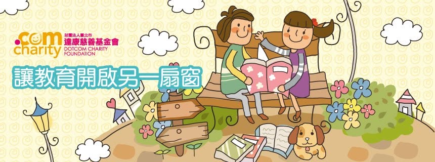

特殊兒支持
先理解行為背後的需要
 查看相關活動 →
查看相關活動 →孩子的情緒或行為，可能是在表達尚未能說出口的壓力與需要。先保持安全、降低刺激、給孩子整理情緒的時間，再用簡單清楚的方式一起找方法。
返回服務分類 ↑EDUCATION OPENS A WINDOW
陪伴特殊需求兒童與家庭，讓每個孩子都能在理解、尊重與愛裡，找到自己的成長節奏。
個資保護優先
本預覽不收集或公開服務對象個資。

OUR BELIEF
達康慈善基金會以慈善教育為目的，關注特殊需求兒童、家庭與社會中容易被忽略的人。我們相信，友善不是特別待遇，而是讓每個人都能安心參與的基本設計。
我們或許無法改變所有處境，但可以從一個理解、一聲問候開始。
WHAT WE DO
從孩子、家庭到社區，建立溫柔但持續的支持連結。
LATEST STORIES
每一篇分享，都是讓理解多走一步。
STORIES ALONG THE WAY
收好一路走來的活動、照片與故事，讓想理解、需要支持的人更容易找到方向。
CONTENT LIBRARY
點擊上方卡片會帶您到對應內容；選取其他分類也能繼續瀏覽。
特殊兒支持
查看相關活動 →孩子的情緒或行為，可能是在表達尚未能說出口的壓力與需要。先保持安全、降低刺激、給孩子整理情緒的時間，再用簡單清楚的方式一起找方法。
返回服務分類 ↑家庭陪伴
穩定的陪伴來自日常累積。傾聽、休息與尋求支持，都不是退縮，而是讓家庭能夠走得更長久的重要力量。
返回服務分類 ↑友善公益活動
 查看相關活動 →
查看相關活動 →友善活動重視清楚流程、適度休息與可預期的環境，讓不同需要的孩子與家庭都能用自己的節奏參與。
返回服務分類 ↑社區關懷
 查看相關活動 →
查看相關活動 →一份問候與一次分享，也能成為理解的起點。透過日常關懷，讓需要支持的人知道社區裡仍有人願意同行。
返回服務分類 ↑粉專原文・11 月 8 日
點選照片查看來源 ↗「小時候只是比較好動、容易分心，長大以後應該就會好了吧？」
我們對 ADHD（注意力不足過動症）的印象，常停留在坐不住、愛講話、上課不專心的孩子身上，卻很少想到，這些特質也可能一路伴隨一個人進入成年生活。
對成人 ADHD 而言，困難不一定表現在明顯的過動，也可能是難以管理時間、容易分心、拖延、情緒起伏，或是在工作與生活中感到挫折。有些人直到成年後，才終於找到解釋自己多年困境的答案。
ADHD 並不是長大就一定會消失的問題，也不代表一個人不夠努力或缺乏自律。當我們願意認識 ADHD，就能少一點責備，多一點理解；不再只是要求自己「再努力一點」，而是學習找到適合自己的生活方式，必要時尋求專業評估與協助。
理解 ADHD，不只是認識一種診斷，更是讓那些長期覺得自己不夠好的人，有機會重新理解自己。
返回最新消息 ↑粉專原文・11 月 1 日
 點選照片閱讀來源 ↗
點選照片閱讀來源 ↗隨著少子化、高齡化與家庭結構改變，越來越多人面臨缺乏陪伴與照顧的困境。
孤獨，不一定是身邊沒有家人，而是當生病、遇到困難時，卻不知道能向誰求助。
我們或許無法改變所有人的處境，但可以從日常的小事開始：主動關心身邊獨居或較少出門的長者；多一點問候，讓鄰里之間建立連結；適時提供協助，陪伴有需要的人尋找社會資源。
今天的我們可能是關心別人的人，未來也可能成為需要被關心的人。讓我們一起建立更有溫度的社會，別讓任何人在孤獨中被遺忘。
返回最新消息 ↑粉專原文・10 月 24 日
點選照片查看來源 ↗從 2000 年至今，孩子的數量越來越少，然而身心障礙學生的比例卻逐年增加，融合教育的推行，使得班級中有特殊兒已逐漸成為校園裡的日常。
對老師而言，教室裡可能有需要不同教學方式的孩子；對同學而言，也意味著我們將有更多機會，認識與自己不一樣的人。然而，當孩子的學習速度、情緒表達、社交方式與多數人不同時，我們是否能夠理解，而不是急著貼上標籤？
特殊兒不需要先變得和大家一樣，才值得被接納。每個孩子都有自己的特質與成長步調。有些孩子需要更多時間學習，有些孩子需要不同的溝通方式，也有些孩子需要更多支持，才能發揮自己的能力。
我們不必把每一種差異都視為美好，也不需要忽略孩子真正面臨的困難；而是可以在理解與陪伴中，幫助孩子找到適合自己的成長方式，讓差異不再只是限制，也有機會成為認識自己、發展能力的起點。
真正的共融，不是要求每個孩子都一樣，而是讓不一樣的孩子，都能在這裡安心學習、自在成長。
返回最新消息 ↑活動回顧
以下每一項皆可點擊查看完整粉專文字、照片與來源。
返回資料分類 ↑活動照片
點選照片即可查看相關主題內容。
本區僅使用已納入網站、來源為基金會公開內容的照片。
返回資料分類 ↑活動影音
點擊影片封面會直接前往 YouTube 播放，不再顯示跳轉詢問。
返回資料分類 ↑相關檔案與資源
為避免提供錯誤版本或未授權資料，正式檔案需確認內容、個資與公開權限後再上架。
返回資料分類 ↑BE PART OF THE CHANGE
邀請您關心特殊需求兒童、家庭與社區中的每一個人。分享正確資訊、參與友善活動，讓支持成為日常。
 觀看影片 ▶
觀看影片 ▶ 觀看影片 ▶
觀看影片 ▶